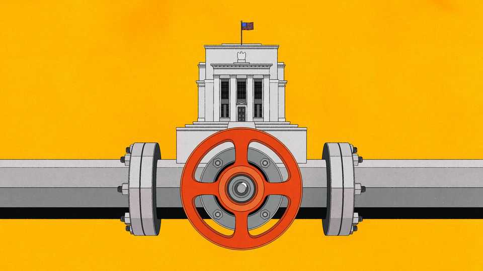

How to shrink the Fed’s $7trn balance-sheet
Kevin Warsh will struggle to reverse the effects of bond-buying
July 16th 2026

IMAGINE A CITY that, after years of drought, floods a river valley and turns it into a vast reservoir. In the decade that follows, houses spread across once-barren hillsides, factories rise where water now flows freely and farmers trade their wells for irrigation canals. Soon, the city is built around abundant water. Then comes a new mayor—an irritable NIMBY who regards the whole expanse as an eyesore. What is the mayor to do?
Kevin Warsh, the Federal Reserve’s new chairman, faces a similar dilemma. During the global financial crisis of 2007-09 the Fed first began buying mortgage-backed securities to steady the housing market, and later long-dated Treasuries to stimulate the broader economy—a policy known as quantitative easing (QE). Three rounds of QE between 2009 and 2014, then another during the covid-19 pandemic in 2020, have swelled the Fed’s balance-sheet to $6.7trn, or nearly 21% of GDP. Treasuries account for about two-thirds of its holdings. Ever suspicious of central-bank sprawl, Mr Warsh fumed last year that this was “a proxy for the Fed’s growing imprimatur on the economy”.
In pursuit of a lower waterline Mr Warsh has assembled a task-force of engineers: Karen Dynan of Harvard University, Raghuram Rajan, an ex-head of India’s central bank, and Jeremy Stein, a former Fed governor. Can the task be done safely?
There are several objections to the Fed’s large balance-sheet. If QE works as a tool of macroeconomic stimulus—a question economists still debate—it does so by distorting the market for long-term debt. If the intervention lasts, so will the distortion. Holding long-term bonds has also proven costly during a period in which interest rates have risen. The Fed pays commercial banks a floating rate of interest on the electronic money it creates to buy bonds, known as “reserves”, which are a liability on its balance-sheet. Yet the yields the Fed earns on its bonds are locked in when they are bought—during the pandemic, at ultra-low levels.
Mr Warsh’s main concern, however, is institutional. Although the Fed buys government bonds in secondary markets rather than directly from the Treasury, owning trillions of dollars’ worth can still make it look like Uncle Sam’s piggy bank. For now, notes Darrell Duffie of Stanford University, “these criticisms are mostly about perceptions”—more eyesore than menace.
To limit the risk that, in Mr Duffie’s words, the perceptions “someday become reality”, the balance-sheet must shrink. The assets cannot decline unless liabilities do, too, so the question is how much room there is on the other side of the ledger. Currency in circulation makes up about $2.5trn of the Fed’s liabilities and cannot be shrunk. The Treasury’s deposit account at the Fed adds another $800bn or so and may offer some wriggle room. The largest liability is reserves, which have risen from around $10bn before the global financial crisis to about $3.1trn today. For the balance-sheet to shrink, these must be drained from banks.
The trouble is that just as the city was gradually moulded around abundant water, the banking system is now built around abundant reserves. Before the financial crisis, reserves paid no interest, so a bank with more than it needed would try to lend them to others and earn the short-term interest rate prevailing in the interbank, or “federal funds” market. As QE flooded the system, the Fed kept control of short-term rates by paying interest on reserves, reducing banks’ incentive to lend them to others. New liquidity regulations pushed in the same direction: for example, banks must show that they can meet their needs using their own liquid assets. Large reserve buffers have thus become the norm.
Banks also adapted their businesses to the new regime. When the Fed bought Treasuries from non-bank investors, the proceeds often landed in those investors’ bank accounts as uninsured deposits. This funding in turn allowed banks to expand their investment portfolios and extend more credit. Mr Rajan says this leads to the “ratcheting” effect: each round of QE left banks dependent on a higher level of reserves.
As with draining a reservoir, judging how low the level can now fall without causing collapse is hard. During its first attempt to unwind QE, between 2017 and 2019, the Fed reduced reserves gradually, hoping to leave enough for the financial system to function. But in September 2019 reserves ran short and overnight interest rates spiked. Strains reappeared last year, as reserves neared the low-water mark. The Fed responded by buying Treasury bills at a pace of around $40bn a month from mid-December to mid-April, expanding its balance-sheet again to top up the reserve pool.
Stephen Miran, another former Fed governor and a critic of balance-sheet bloat, wants the Fed to cut the interest rate paid on reserves below what banks could earn by lending them in the federal-funds market. Mr Duffie favours updating Fed software to offset incoming and outgoing payments before they are settled, allowing banks to operate with smaller buffers (the Bank of England and European Central Bank have such systems). Mr Rajan has mused about the Fed letting the first institution caught in a crisis topple, as a way to discipline banks from taking too much risk in a world where abundant reserves encourage credit growth.
Everyone agrees that any change will take time. Even Mr Warsh has acknowledged that a balance-sheet expanded over 18 years will take “more than 18 weeks” to shrink. Rather than drain the reservoir, he may settle for changing its composition. This could mean replacing long-dated bonds with short-term Treasury bills as they mature, which would reduce the Fed’s influence over longer-term borrowing costs while leaving the balance-sheet’s size unchanged. That would not lower the waterline. But it might improve the view.■
Subscribers to The Economist can sign up to our Opinion newsletter, which brings together the best of our leaders, columns, guest essays and reader correspondence.